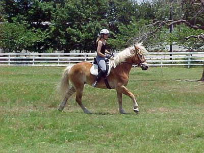
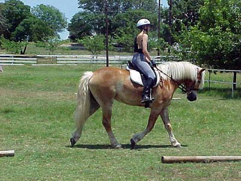
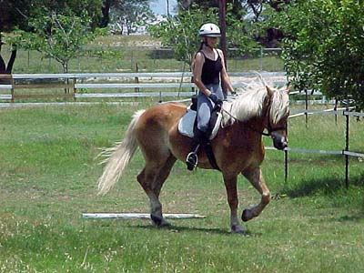
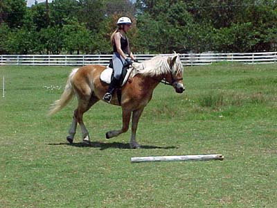
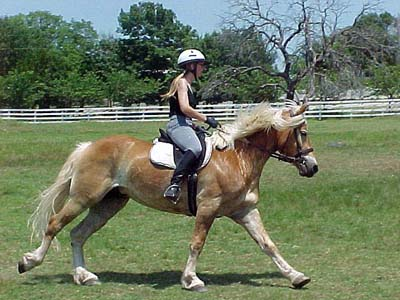
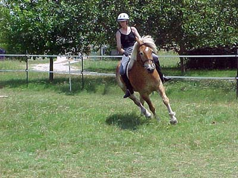
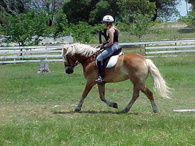

I still occassionally get some resistance. Bart has been commenting
on how rare it is now at the trot.

So, now we'll start working on it at the canter. Transitions are
getting, but there are still problems with the leads.

Bart says this is how we typically look at the trot now. I still
work a lot on stretching out his neck.

Maybe a little hollow, but it's hard to tell...

He got the correct lead every time today.

Can you say strung out and trying to keep his balance?

Bart thought this was cool. I tried to explain the concept of upright.
I'm just happy with transitions and leads right now, but this is something
we'll be working on a lot more. I'm sure it will get better with time.

They are right that those transitions help lighten the front end.
He's really brought his hind end under himself here and raised his shoulders.